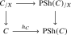
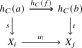

We next combine the localization description of colimits in \(\Cat\) with the pointwise formula for Kan extensions. The result is a Fubini theorem for a diagram indexed by a category which is itself presented as a colimit.
13.3.1 Fiberwise and iterated colimits
Lemma 13.3.1 (Fiberwise colimits over cocartesian fibrations). Let \(p\colon E \to I\) be a cocartesian fibration between small categories and let \(\Phi\colon E \to C\) be a functor. Assume that the restriction \(\Phi\vert_{E_i}\colon E_i \to C\) admits a colimit for every object \(i\) of \(I\). Then the left Kan extension \(p_!\Phi\colon I \to C\) exists and is given pointwise by \[ (p_!\Phi)(i) \simeq \colim_{E_i} \Phi\vert_{E_i}. \] Moreover, \(\Phi\) admits a colimit if and only if \(p_!\Phi\) admits a colimit. In that case, there is a canonical isomorphism \[ \colim_E \Phi \simeq \colim_I p_!\Phi. \] Dually, fiberwise limits over a cartesian fibration assemble into a right Kan extension and may be computed by first taking the fiberwise limits and then the limit over the base.
Proof
For an object \(i\) of \(I\), let \(E_{/i} := E\times_I I_{/i}\) be the relative slice. There is a pullback square
 The functor \(p_{/i}\) is a cocartesian fibration. The lower horizontal functor selects the terminal object of \(I_{/i}\) and is therefore a right adjoint. It follows from Proposition 6.2.4 that \(\iota_i\) is a right adjoint, and hence terminal by Proposition 9.1.12. Consequently, Corollary 13.1.6 gives a canonical isomorphism
\[
\colim_{E_{/i}} \Phi\vert_{E_{/i}} \simeq \colim_{E_i} \Phi\vert_{E_i}.
\]
In particular, all the colimits required by the pointwise formula for left Kan extensions exist. By Theorem 13.1.9, the left Kan extension \(p_!\Phi\) exists, and the preceding isomorphism identifies its value at \(i\) with the asserted fiberwise colimit.
The functor \(p_{/i}\) is a cocartesian fibration. The lower horizontal functor selects the terminal object of \(I_{/i}\) and is therefore a right adjoint. It follows from Proposition 6.2.4 that \(\iota_i\) is a right adjoint, and hence terminal by Proposition 9.1.12. Consequently, Corollary 13.1.6 gives a canonical isomorphism
\[
\colim_{E_{/i}} \Phi\vert_{E_{/i}} \simeq \colim_{E_i} \Phi\vert_{E_i}.
\]
In particular, all the colimits required by the pointwise formula for left Kan extensions exist. By Theorem 13.1.9, the left Kan extension \(p_!\Phi\) exists, and the preceding isomorphism identifies its value at \(i\) with the asserted fiberwise colimit.
For any object \(x\) of \(C\), the universal property of the left Kan extension gives natural equivalences \begin{align*} \Hom_{\Fun(I,C)}(p_!\Phi,x_I) &\simeq \Hom_{\Fun(E,C)}(\Phi,p^*x_I) \\ &= \Hom_{\Fun(E,C)}(\Phi,x_E). \end{align*} Thus \(p_!\Phi\) and \(\Phi\) have naturally equivalent cocone functors. One admits a colimit if and only if the other does, and their colimits are then canonically isomorphic. The statement about limits follows by passing to opposite categories.
Corollary 13.3.2 (Colimits indexed by colimits). Let \(I\) be a small category and let \(F\colon I \to \Cat\) be a functor. Write \[ L:=\colim_I F \] and let \(\lambda_i\colon F(i) \to L\) denote the components of the colimit cone.
(1) Let \(C\) be a category that admits \(I\)-indexed colimits, and let \(\psi\colon L \to C\) be a functor. Assume that \(\psi\circ\lambda_i\colon F(i) \to C\) admits a colimit for every object \(i\) of \(I\). Then these colimits assemble into a functor \(\psi_!\colon I \to C\), the functor \(\psi\) admits a colimit, and there is a canonical isomorphism \[ \colim_L \psi \simeq \colim_{i : I} \colim_{F(i)} \psi\circ\lambda_i. \]
(2) Let \(C\) be a category that admits \(I\catop\)-indexed limits, and let \(\psi\colon L \to C\) be a functor. Assume that \(\psi\circ\lambda_i\colon F(i) \to C\) admits a limit for every object \(i\) of \(I\). Then these limits assemble into a functor \(\psi_*\colon I\catop \to C\), the functor \(\psi\) admits a limit, and there is a canonical isomorphism \[ \lim_L \psi \simeq \lim_{i : I\catop} \lim_{F(i)} \psi\circ\lambda_i. \]
Proof
Let \(p_F\colon E := \int_{i : I}F(i) \to I\) be the cocartesian fibration classified by \(F\). By Theorem 13.2.1, the category \(L\) is the localization of \(E\) at the \(p_F\)-cocartesian morphisms. Write \[ \gamma\colon E \longrightarrow L \] for the localization functor. Its restriction to the fiber \(E_i\simeq F(i)\) identifies with \(\lambda_i\).
For part (1), apply Lemma 13.3.1 to \(\psi\circ\gamma\colon E \to C\). It supplies a left Kan extension \[ (p_F)_!(\psi\circ\gamma)\colon I \longrightarrow C, \] which is the asserted functor \(\psi_!\), and identifies its value at \(i\) with \(\colim_{F(i)}\psi\circ\lambda_i\). Since \(C\) admits \(I\)-indexed colimits, the functor \(\psi_!\) admits a colimit. The same lemma therefore gives \[ \colim_E \psi\circ\gamma \simeq \colim_{i : I}\colim_{F(i)}\psi\circ\lambda_i. \] The localization \(\gamma\) is terminal by Proposition 9.1.9. Hence Corollary 13.1.6 identifies the left-hand side with \(\colim_L\psi\), proving part (1).
For part (2), apply part (1) to the functor \(F\catop\colon I \to \Cat\) and the functor \(\psi\catop\colon L\catop \to C\catop\). The opposite-category functor is an equivalence \(\Cat \to \Cat\) and therefore preserves colimits, so that \[ L\catop \simeq \colim_{i : I} F(i)\catop. \] Translating the resulting statement in \(C\catop\) back to \(C\) gives the asserted functor \(\psi_*\colon I\catop \to C\) and the formula for its limit.
13.3.2 Colimits of right fibrations
The iterated-colimit formula has a useful application to right fibrations. We show that unstraightening preserves colimits: the colimit of a diagram of right fibrations is again a right fibration, classified by the pointwise colimit of the corresponding presheaves. This is the input for the descent arguments of the next section.
Lemma 13.3.3. Let \(I\) be small and \(X\colon I \to \PSh(C)\). Then the canonical functor \[ p\colon \int_{i : I} C_{/X_i}\to C \] is a cartesian fibration.
Proof
Given a presheaf \(X\colon C\catop\to\An\), we will see \(C_{/X}\) through the following
pullback square

We construct cartesian lifts explicitly. Let \(u\colon i \to j\) be a morphism in \(I\),
with induced morphism \(u_!\colon X_i\to X_j\).
The explicit description of the Grothendieck construction
given in Remark 12.4.17
means that a morphism in \(\int_{i : I} C_{/X_i}\)
over \(f\colon a\to b\) in \(C\) amounts to a commutative square of the form

Lemma 13.3.4. Let \(I\) be small and \(X\colon I \to \PSh(C)\). Consider the pullback
 which provides a functor \(I \to \Cat\), \(i \mapsto C_{/X_i}\). Then there is a canonical equivalence
\[
\colim_{i \in I} C_{/X_i} \iso C_{/(\colim_{i \in I} X_i)}.
\]
which provides a functor \(I \to \Cat\), \(i \mapsto C_{/X_i}\). Then there is a canonical equivalence
\[
\colim_{i \in I} C_{/X_i} \iso C_{/(\colim_{i \in I} X_i)}.
\]
Proof
We start with some observations:
• The functor \(\Cat_{/C} \to \Cat, (X,p) \mapsto X\) preserves colimits, since it admits a right adjoint \(C \times -\colon \Cat \to \Cat_{/C}\). Furthermore this functor is conservative. Hence we may compute this colimit either in \(\Cat_{/C}\) or \(\Cat\).
• The category \(\PSh(C)\) is equivalent to the full subcategory \(\RFib(C) \subseteq \Cat_{/C}\) consisting of the right fibrations. This equivalence is given by sending \(X\) to \((C_{/X}, p_X\colon C_{/X} \to C)\).
• So it will suffice to show that \(\colim_{i \in I} C_{/X_i}\), computed in \(\Cat_{/C}\), is still contained in \(\RFib(C)\), since then it must also be a colimit in \(\RFib(C)\) and hence correspond to the colimit of the \(X_i\) in \(\PSh(C)\).
Put \(E:=\int_{i\in I}C_{/X_i}\), and write \(p\colon E\to C\) and \(r\colon E\to I\) for the two projections. By Lemma 13.3.3, the functor \(p\) is a cartesian fibration. By Theorem 13.2.1, the colimit \(\colim_i C_{/X_i}\) is obtained from \(E\) by inverting the \(r\)-cocartesian morphisms. Every such morphism maps to an isomorphism in \(C\). Conversely, a morphism of \(E\) whose image in \(C\) is an isomorphism factors as an \(r\)-cocartesian morphism followed by a morphism in some \(C_{/X_j}\) lying over an isomorphism in \(C\); the latter is an equivalence because \(C_{/X_j}\to C\) is a right fibration. Thus this colimit is also the localization of \(E\) at all morphisms mapped by \(p\) to isomorphisms. Applying Corollary 12.4.12 with the subcategory \(W=E\) shows that the induced functor \[ \colim_i C_{/X_i}\longrightarrow C \] is a cartesian fibration. Its fiber over \(c\colon *\to C\) is the localization of \(\int_i X_i(c)\) at all its morphisms. Every such morphism factors as a cocartesian morphism followed by a vertical morphism, and the vertical morphism is an equivalence because each \(X_i(c)\) is an anima. This is therefore the localization at the cocartesian morphisms, hence the anima \(\colim_i X_i(c)\). Thus all its fibers are animae, so it is a right fibration. Under straightening, its fiber at \(c\) is \(\colim_i X_i(c)\), and it therefore classifies the pointwise colimit \(\colim_i X_i\).
Proposition 13.3.5. Let \(C\) be a small category. The embedding functor \[ \PSh(C)\simeq\RFib(C)\hookrightarrow\Cat_{/C} \] has a right adjoint defined by assigning to each \(f\colon X\to C\) the presheaf \[ c\mapsto\Hom_{\Cat_{/C}}(C_{/c},X)\, . \]
Proof
Existence of the right adjoint follows from Corollary 12.8.2 and Lemma 13.3.4. If \(R\) denotes it, then the Yoneda lemma gives \[ R(X)(c)\simeq\Hom_{\PSh(C)}(h_C(c),R(X)) \simeq\Hom_{\Cat_{/C}}(C_{/c},X), \] which is the asserted formula.